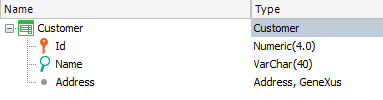
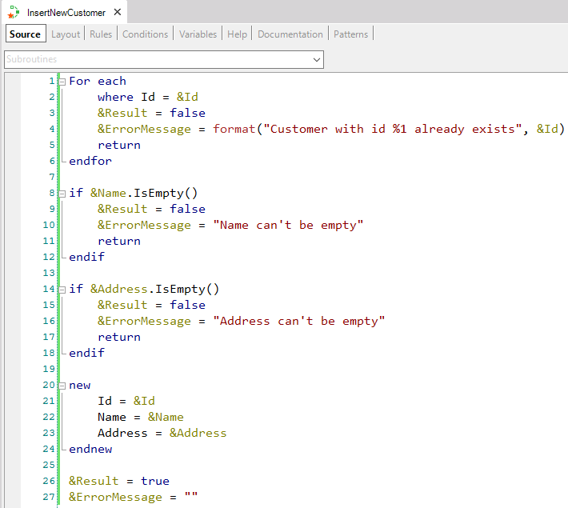
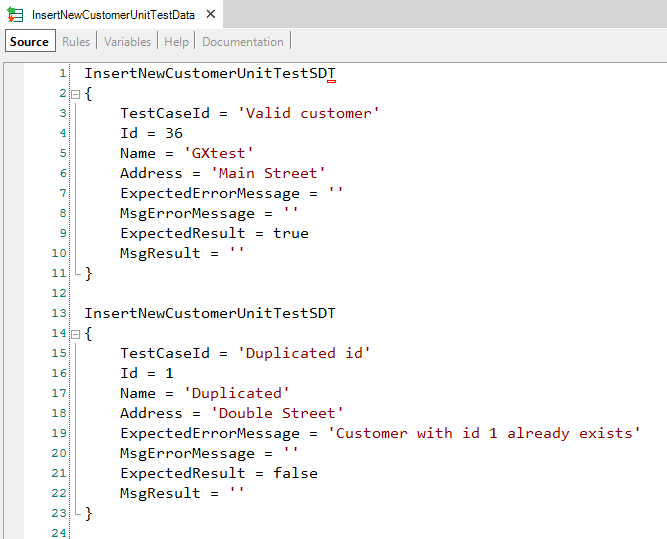
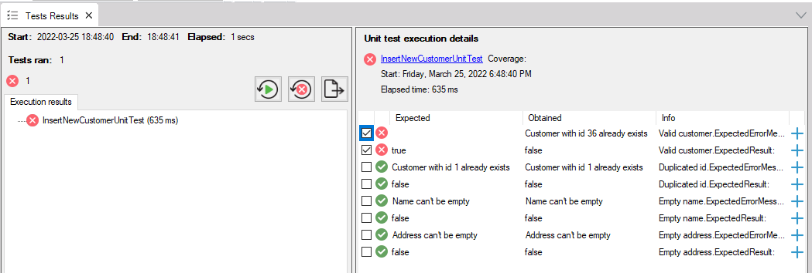
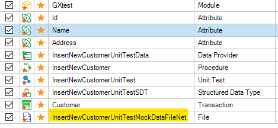

In this article a practical use case of the feature database mocking is presented.
Let's say you have a transaction Customer comprised of an Id, Name, and Address. Additionally, you also have a procedure that receives the information to insert a new customer into the database, doing some checks and returning a boolean value and an error message in case the operation could not be completed.
These are the objects we have so far:


Now, you create a unit test for your procedure using the option Create Unit Test over it and define different test cases such as a valid new customer, an invalid id (duplicated), an empty address, name, and so on.

Your test now requires a certain database state, which you will have to maintain between executions. For example, for the test case when you insert a valid customer, the first time you execute the test it will pass because you made sure there wasn't a client with the id 36. But if you execute it again this is what you get:

You should delete the customer 36 somehow (there are several ways to do it), but you don't want to do the same every time you execute your tests, and additionally, you want to test that your checks inside the procedure are correct, not deal with database scripts or manual setups.
This is where database mocking shines. Once you have your data in place, select the option "Record mocking data" over the test. Once the execution finishes in the output log you will be informed that a new file object was created in your KB. This new file contains mocking data that will allow you to not depend on the database records anymore.
To be sure you can run the test again and verify that the execution result is the same, otherwise, you would receive an error "Customer with id 36 already exists" as we saw before.
Once you have your tests ready you can commit your changes to GeneXus Server. According to your pipeline script configuration, the test could be executed using the mock data you recorded locally but now in the continuous integration environment and the results will be the same as those you got in your machine.

After a table structure or navigation changes, you likely have to update your mock data, since DB sentences will be different. The same applies if your object under test now has a different number of DB accesses or modifies a different number of attributes for example. You need to create the conditions required to perform a mock recording again.
| Backlinks |
| Database Mocking |